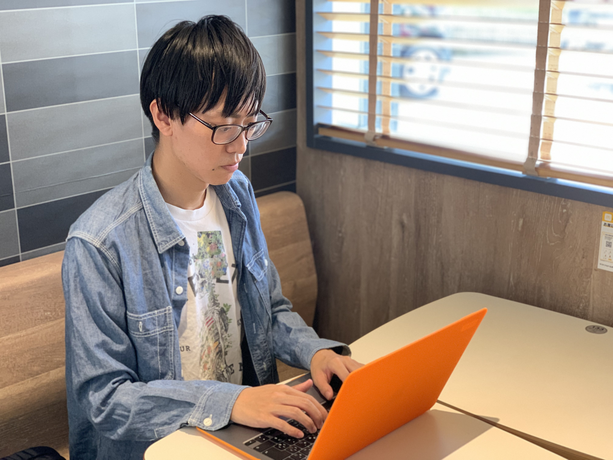
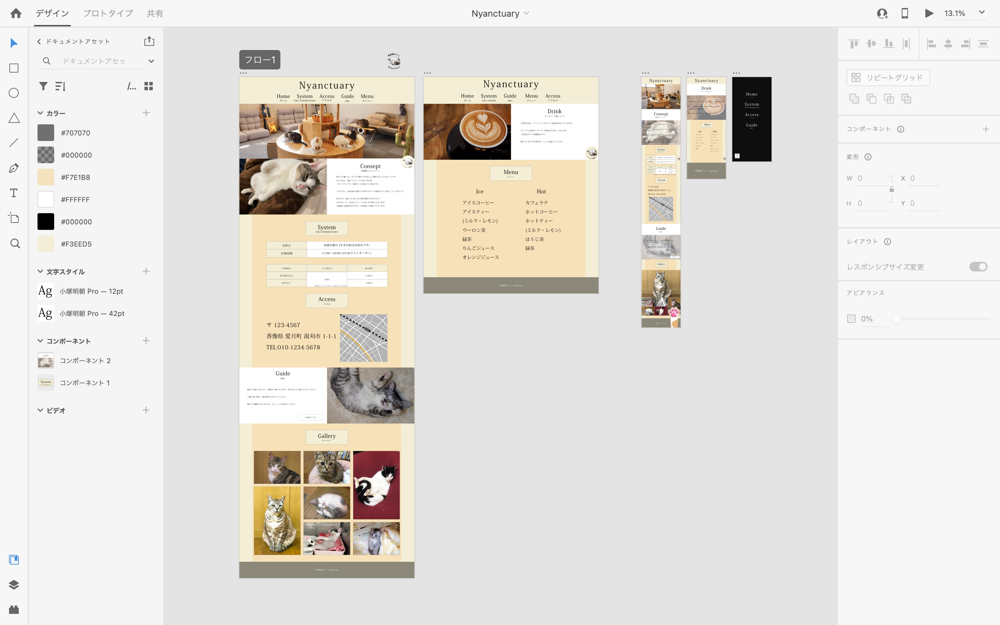
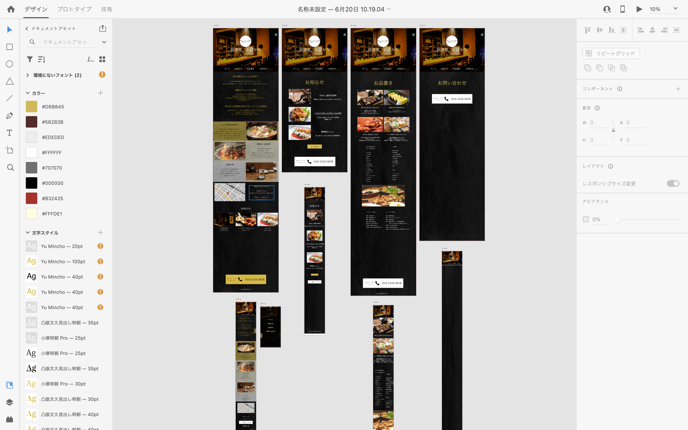

Horita Yuki
About me
自己紹介

堀田 夕紀(ホリタ ユキ)と申します。ご覧いただきありがとうございます。
経歴
宮崎県立宮崎工業高等学校 電子情報科を卒業後、SUMCO TECHXIV株式会社に就職。
4年10ヶ月の間半導体製造事業に携わってきました。
その後、ライブビジネススクールの求職者支援訓練に参加させていただき、
Webデザイナーになるために学習をしてきました。
サイト制作に使用した技術
HTML/ CSS(SCSS)・・・
HTML・CSSを使用した静的なサイトを制作できます。
レスポンシブ対応についても学習・実践しました。
JavaScript・・・
JavaScriptを使用して、サイトの動的な修飾・機能の追加ができます。
例として、下部「Works」の「サイト解説」のモーダルウィンドウはライブラリを使用せず、JavaScriptのみで実装しています。
jQueryを使用した修飾・機能追加も学習・実践しました。
WordPress・・・
WordPressを使用したデータベースの管理、それを使ったサイトの構築ができます。
PHP・・・
基本的なプログラミング言語の考え方について学習しました。
サイト制作では、主にWordPressの制御に使用しています。
Adobe PhotoShop・・・
サイト制作に使用する画像の色彩やコントラストの調整、切り抜きやリサイズ等、基本的な機能を扱えます。
Adobe Illustrator・・・
サイト制作に使用する画像やロゴの制作等、基本的な機能を扱えます。
資格
Photoshopクリエイター認定試験 エキスパート
Illustratorクリエイター認定試験 エキスパート
Works
制作した作品
ソースコードはGitHubに公開してあります。→ リンク

①
①
②
架空の保護猫カフェ
「Nyanctyary」のサイト
リンク
使用した技術：
Adobe PhotoShop / Adobe Illustrator / Adobe Xd /
HTML(Responsive) / CSS / JavaScript(jQuery)
制作期間：
30時間程度
デザインカンプ・素材の収集(2日・10時間程度)
コーディング(2日・20時間程度)
このサイトを制作した理由：
このサイトは、Adobe Xdでデザインカンプを作り、その通りに作る練習のために製作しました。サイトの構成としてはトップページとドリンクメニューのページの2ページのみの構成となっています。
Adobe Xdでのデザインカンプはこのようになっています。
サイトを見たお客さんに来店してもらうことがこのサイトの目的です。

このサイトのデザインについて：
実際に営業している猫カフェのサイトを色々と参考にさせていただき、「それっぽいもの」を作ることが目的です。あえて自分の色を出さないようにしています。
猫カフェに来るお客さんは癒しを求めてやってくると思うので、全体的に暖色系で暖かく、柔らかい雰囲気でデザインしました。
サイトのコンセプトが、「猫たちが安心して眠れる場所を作る」というものになっているので、猫の寝顔の写真を多く配置しています。
制作に使用した技術について：
このサイトの制作には、HTML,CSS,JavaScript(jQuery)を使用しています。ページの移動に連動して写真やテキストをフェードインさせる箇所①、ページを上に移動させると右下からトップに戻るボタンが出てくる箇所②にJavaScriptが使用されています。
また、レスポンシブ対応もしています。
工夫した箇所・苦労した箇所・制作した感想：
jQueryで動きを少し取り入れて制作しました。装飾過多にならないようにシンプルな動きで、統一感を崩さないように気をつけました。
デザインカンプ通りに作るということを目標にしていましたが、制作していく中で「こうした方がいいかな」という場面があり、最終的に細かいところはデザインカンプ通りにはなりませんでした。
デザインカンプ制作の時点で、デザインの意味や目的を明確にして制作していれば防げたことだと思うので、デザインの一つ一つに明確な意図を持ちたいと思いました。

①
①
②
架空の居酒屋
「鶏よし」のサイト
リンク
使用した技術：
Adobe PhotoShop / Adobe Illustrator / Adobe Xd /
HTML(Responsive) / CSS(SCSS) / JavaScript(jQuery) / WordPress
制作期間：
60時間程度
サイトの構想(8時間程度)
デザインカンプ・素材の収集(10時間程度)
コーディング(42時間程度)
このサイトを制作した理由：
このサイトは、HTML・CSSの授業の中で、実習として制作したものです。
Adobe Xdでデザインカンプを作り、その通りに制作することを目的としています。
Adobe Xdでのデザインカンプはこのようになっています。
サイトを見たお客さんに予約・来店してもらうことがこのサイトの目的です。

このサイトのデザインについて：
これも実際に営業している居酒屋のサイトを色々と参考にさせていただき、「それっぽいもの」を作ることが目的です。あえて自分の色を出さないようにしています。
お店の想定として、30代〜40代の男性が、1〜4人で来店する小さめの居酒屋(カウンター席が6席くらい、座敷が2つくらい)で、地鶏料理が名物、というお店を想定して制作しました。
落ち着いて、上品な雰囲気でデザインしたかったので、黒を基調として、金色や銀色でアクセントを加えています。
制作に使用した技術について：
このサイトの制作には、HTML,CSS,JavaScript(jQuery),WordPressを使用しています。ページの移動に連動して写真やテキストをフェードインさせる箇所①にJavaScriptが使用されています。
お店のお知らせや、期間限定メニューなど、随時更新が予想されるサイトですので、WordPressでのデータベース管理も行なっています。トップページ下部のお知らせ部分②や、お知らせページの記事はWordPressで管理しています。
また、レスポンシブ対応もしています。
工夫した箇所・苦労した箇所・制作した感想：
サイトの目的は、お客さんに予約・来店してもらうことなので、全ページに電話番号を記載しています。
デザインカンプ通りに制作するという目標は概ね達成できたと思います。
初めてWordPressを使用してコンテンツの表示を行なったので、表示させるコンテンツの制御が難しかったです。CMSの便利さを知れたことは大きな収穫でした。

①
②
③
架空のゲーム紹介サイト
「GaMeet」のサイト
リンク
使用した技術：
HTML / CSS(SCSS) / JavaScript(jQuery) / WordPress
制作期間：
200時間程度
サイトの構想(10時間程度)
デザインカンプ・素材の収集(20時間程度)
コーディング(170時間)
このサイトを制作した理由：
このサイトは、職業訓練で教えていただいたコーディング技術をできる限り使用することを目的として制作しました。
実際にサイトの運用(=記事の更新)が出来るところまで作り込むことを目標にしました。
さまざまなゲームを紹介し、知ってもらうことがサイトの目的です。
このサイトのデザインについて：
このサイトは、自分の好きなデザイン・配色で制作しました。
さまざまなゲームを紹介するというサイトの特性上、各ゲームのデザインと喧嘩しない様にシンプルなデザインのサイトにした方がいいと考えました。
ただ、JavaScriptを使用した「動き」も取り入れたかったので、図形(菱形)をモチーフにしてサイトをデザインし、シンプルかつ動きのあるサイトを目指しました。
また、裏テーマとして「サイトのデザインにできるだけ画像を使用しないこと」があり、コンテンツの内容以外での画像の使用はしていません。
制作に使用した技術について：
このサイトの制作には、HTML,CSS,JavaScript(jQuery),WordPressを使用しています。トップページ上部のスライド部分①、下部のゲームソフトを発売日順に表示している部分②のスライドバーにJavaScriptが使用されています。
新作ゲームの情報や、ゲームイベントやセールの情報など、随時更新が予想されるサイトですので、WordPressでのデータベース管理も行なっています。コンテンツは全てWordPressで管理されており、WordPressの基本機能であるテンプレートを使用することにより、新作ゲームの記事を簡単に投稿できるようにしています。
絞り込み機能やフリーワード検索の機能③もつけ、ユーザビリティを高めています。
レスポンシブ対応は行っていません。
工夫した箇所・苦労した箇所・制作した感想：
このサイトでは、オリジナルのスライドショーや絞り込み・検索フォーム、スライドバーと画像表示の連動など、新しい試みを取り入れてみました。
トップページ上部のスライドショー①、ページ下部のスライドバーと画像表示の連動②は、JavaScriptを使用して制作しました。概ね望んだ通りの動きにはできましたが、CSS,JavaScript共々必要以上のコードを書いてしまっていると感じます。コードの簡略化についても意識していきたいです。
また、WordPressを使用したコンテンツの管理、テンプレート的なページの制作にも挑戦しています。
カテゴリーやタグを利用してのコンテンツの制御に難儀しましたが、先生方の助けもあり、なんとか形にすることができました。
ご覧いただきありがとうございました。ご質問等ございましたら、お手数ですが以下の連絡先よりお問い合わせください。
連絡先
居住地：宮崎県宮崎市清武町正手2丁目24番地プレシャス清武102号
電話番号：080-2690-0529
メールアドレス：yukky.yukky0529@gmail.com